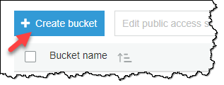
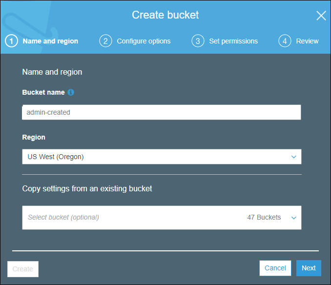
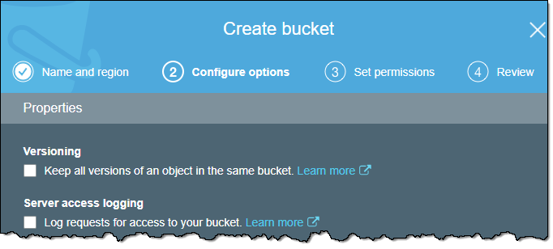
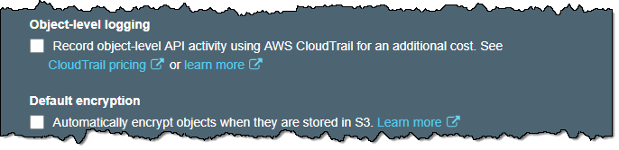
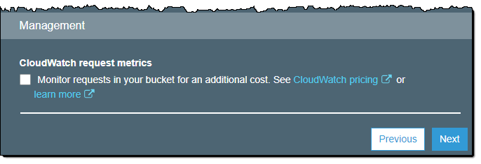
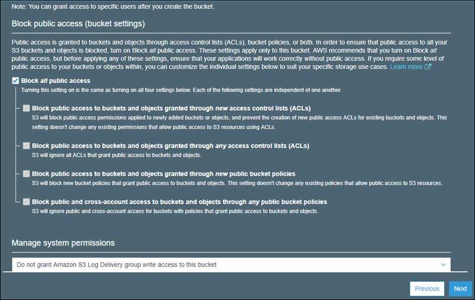

Berkine
Amazon Rekognition - Deep Learning Powered Image Recognition Service
- Created: 15/ 03/ 2020
- by: Berkine Design
Welcome! First of all we want to thank you for purchasing our Amazon Rekognition - Deep Learning Powered Image Recognition Service Template
We really do appreciate every sale. If you like our work please do not forget to rate it. It helps us in developing new and better items

In the following sections we will explain how to set up and use it the easiest way possible. If you have any questions that you feel should have been in this document you can contact us through our profile page on codecanyon.net/user/berkinedesign and we'll get back to you as soon as possible. Thanks so much!!!
For questions on basic HTML, JavaScript or CSS editing - please give your question a quick Google or visit W3Schools as template issues get top priority. You will need some knowledge of HTML/JS/PHP/CSS to edit this file uploader.
Amazon Rekognition Information
Amazon Rekognition makes it easy to add image and video analysis to your applications using proven, highly scalable, deep learning technology that requires no machine learning expertise to use. With Amazon Rekognition, you can identify objects, people, text, scenes, and activities in images and videos, as well as detect any inappropriate content. Amazon Rekognition also provides highly accurate facial analysis and facial search capabilities that you can use to detect, analyze, and compare faces for a wide variety of user verification, people counting, and public safety use cases.
With Amazon Rekognition, you can identify thousands of objects (such as bike, telephone, building), and scenes (such as parking lot, beach, city). When analyzing video, you can also identify specific activities such as "delivering a package" or "playing soccer".
Amazon Rekognition helps you identify potentially unsafe or inappropriate content across both image and video assets and provides you with detailed labels that allow you to accurately control what you want to allow based on your needs.
In photos, text appears very differently than neat words on a printed page. Amazon Rekognition can read skewed and distorted text to capture information like store names, street signs, and text on product packaging.
With Amazon Rekognition, you can easily detect when faces appear in images and videos and get attributes such as gender, age range, eyes open, glasses, facial hair for each. In video, you can also measure how these face attributes change over time, such as constructing a timeline of the emotions expressed by an actor.
Amazon Rekognition provides fast and accurate face search, allowing you to identify a person in a photo or video using your private repository of face images. You can also verify identity by analyzing a face image against images you have stored for comparison.
You can quickly identify well known people in your video and image libraries to catalog footage and photos for marketing, advertising, and media industry use cases.
AWS PHP SKD Installation (Version 3)
The AWS PHP SDK v3 comes included in the app - "vendor" folder in the root directory of the app is the offical AWS PHP SDK
Please visit the following link for the up to date instructions regarding installation of AWS PHP SDK v3 and its new versions directly from Amazon Web Services page
General Settings Configuration
In order to run Amazon Rekognition - Deep Learning Powered Image Recognition Service correctly, you need to update the following lines accordingly:
Create AWS IAM User with Amazon Rekognition Full Access Policy attached, and also with S3 File Read/Write permission policies attached.
Download and save Access Key and Secret Access Key of the User
Create Amazon S3 bucket for uploading images(Must be in the same region where Amazon Rekognition will be used)
- For creating AWS IAM user please visit - Create AWS IAM User section
- For creating Amazon S3 Bucket please visit - Create Amazon S3 Bucket section
Edit the 'config.php' file accordingly:
- Provide AWS IAM Access Key and Secret Access Key via AWS credientials files:
This is a special, INI-formatted file stored under your HOME directory (~/.aws/credentials)
- [credential profile name]
aws_access_key_id = ANOTHER_AWS_ACCESS_KEY_ID
aws_secret_access_key = ANOTHER_AWS_SECRET_ACCESS_KE
return [ 'rekognition' => [ /* 'accessKey' => '', */ # IAM User Access key (in case if you want to hard code directly ) /*'secretAccessKey' => '', */ # IAM User Secret Access key (in case if you want to hard code directly) 'profile' => 'default', # AWS credentials profile to specify your credentials /* 'region' => 'XX-XXXX-X', */ # AWS Region (selected data center) /* 'version' => 'latest', */ /* 'bucketName' => 'bucket_name' */ # Amazon S3 Bucket Name (must be unique) ] ];
Provide AWS IAM Access Key and Secret Access Key hard coded into the code (NOT RECOMMENDED)
return [ 'rekognition' => [ 'accessKey' => 'XXXXXXXXXXXXXXXXXXXX', # IAM User Access key (in case if you want to hard code directly ) 'secretAccessKey' => 'XXXXXXXXXXXXXXXXXXXXXXXXXXXXXXXXXXXXXXXXX', # IAM User Secret Access key (in case if you want to hard code directly) /* 'profile' => 'default', */ # AWS credentials profile to specify your credentials /* 'region' => 'XX-XXXX-X', */ # AWS Region (selected data center) /* 'version' => 'latest', */ /* 'bucketName' => 'bucket_name' */ # Amazon S3 Bucket Name (must be unique) ] ];
If you hard code keys into the code, make sure you add update following code in Rekognition.php file:
$rekognition = new Aws\Rekognition\RekognitionClient([ 'credentials' => [ # WARNING: We (AWS as well) don't recommend hardcoding any of your security keys in the code 'key' => $config['rekognition']['accessKey'], # In case you still want to hard code your access & secret access keys in your code 'secret' => $config['rekognition']['secretAccessKey'], # Uncomment 'credentials' and comment out 'profile' ], /* 'profile' => $config['rekognition']['profile'], */ 'region' => $config['rekognition']['region'], 'version' => $config['rekognition']['version'] ]); $this->rekognition = $rekognition; $s3 = new Aws\S3\S3Client([ 'credentials' => [ # WARNING: We (AWS as well) don't recommend hardcoding any of your security keys in the code 'key' => $config['rekognition']['accessKey'], # In case you still want to hard code your access & secret access keys in your code 'secret' => $config['rekognition']['secretAccessKey'], # Uncomment 'credentials' and comment out 'profile' ], /* 'profile' => $config['rekognition']['profile'], */ 'version' => $config['rekognition']['version'], 'region' => $config['rekognition']['region'] ]);Provide Amazon S3 Bucket name to which create IAM user has 'putObject and getObject' permissions
return [ 'rekognition' => [ /* 'accessKey' => '', */ # IAM User Access key (in case if you want to hard code directly ) /*'secretAccessKey' => '', */ # IAM User Secret Access key (in case if you want to hard code directly) /* 'profile' => 'default', */ # AWS credentials profile to specify your credentials /* 'region' => 'XX-XXXX-X', */ # AWS Region (selected data center) /* 'version' => 'latest', */ 'bucketName' => 'XXXXXXX' # Amazon S3 Bucket Name (must be unique) ] ];
Amazon Rekognition
Main Amazon Rekognition PHP functions are in Rekognition.php file
Each Image Processing Option has a backend php code, which calls function from Rekognition.php file
Each section of the code is commented well to avoid confusion.
Reach out for support request if facing issues with the backend code.
How to Create S3 Bucket
Before you can upload data to Amazon S3, you must create a bucket in one of the AWS Regions to store your data in. After you create a bucket, you can upload an unlimited number of data objects to the bucket.
A bucket is owned by the AWS account that created it. By default, you can create up to 100 buckets in each of your AWS accounts. If you need additional buckets, you can increase your account bucket limit to a maximum of 1,000 buckets by submitting a service limit increase. For information about how to increase your bucket limit, see AWS Service Limits in the AWS General Reference.
Buckets have configuration properties, including their geographical region, who has access to the objects in the bucket, and other metadata.
To create an S3 bucket
-
Sign in to the AWS Management Console and open the Amazon S3 console at https://console.aws.amazon.com/s3/.
-
Choose Create bucket.
 -
On the Name and region page, type a name for your bucket and choose the AWS Region where you want the bucket to reside. Complete the fields on this page as follows:
-
For Bucket name, type a unique DNS-compliant name for your new bucket. Follow these naming guidelines:
-
The name must be unique across all existing bucket names in Amazon S3.
-
The name must not contain uppercase characters.
-
The name must start with a lowercase letter or number.
-
The name must be between 3 and 63 characters long.
-
After you create the bucket you cannot change the name, so choose wisely.
-
Choose a bucket name that reflects the objects in the bucket because the bucket name is visible in the URL that points to the objects that you're going to put in your bucket.
-
-
For Region, choose the AWS Region where you want the bucket to reside. Choose a Region close to you to minimize latency and costs, or to address regulatory requirements. Objects stored in a Region never leave that Region unless you explicitly transfer them to another Region. For a list of Amazon S3 AWS Regions, see Regions and Endpoints in the Amazon Web Services General Reference.
-
(Optional) If you have already set up a bucket that has the same settings that you want to use for the new bucket that you want to create, you can set it up quickly by choosing Copy settings from an existing bucket, and then choosing the bucket whose settings you want to copy.
The settings for the following bucket properties are copied: versioning, tags, and logging.
-
Do one of the following:
-
If you copied settings from another bucket, choose Create. You're done, so skip the following steps.
-
If not, choose Next.
-
 -
-
On the Configure options page, you can configure the following properties and Amazon CloudWatch metrics for the bucket. Or, you can configure these properties and CloudWatch metrics later, after you create the bucket.
-
Versioning
Select Keep all versions of an object in the same bucket. to enable object versioning for the bucket.
-
Server access logging
Select Log requests for access to your bucket. to enable server access logging on the bucket. Server access logging provides detailed records for the requests that are made to your bucket.
 -
Tags
You can use cost allocation bucket tags to annotate billing for your use of a bucket. Each tag is a key-value pair that represents a label that you assign to a bucket.
To add a tag, enter a Key and a Value. Choose Add another to add another tag.

-
Object-level logging
Select Record object-level API activity by using CloudTrail for an additional cost to enable object-level logging with CloudTrail.
-
Default encryption
Select Automatically encrypt objects when they are stored in S3 to enable default encryption for the bucket. You can enable default encryption for a bucket so that all objects are encrypted when they are stored in the bucket.
 -
Object lock
Select Permanently allow objects in this bucket to be locked if you want to be able to lock objects in the bucket. Object lock requires that you enable versioning on the bucket.
-
CloudWatch request metrics
Select Monitor requests in your bucket for an additional cost. to configure CloudWatch request metrics for the bucket.

-
-
Choose Next.
-
On the Set permissions page, you manage the permissions that are set on the bucket that you are creating.
Under Block public access (bucket settings), we recommend that you do not change the default settings that are listed under Block all public access. You can change the permissions after you create the bucket.
Warning
We highly recommend that you keep the default access settings for blocking public access to the bucket that you are creating. Public access means that anyone in the world can access the objects in the bucket.
If you intend to use the bucket to store Amazon S3 server access logs, in the Manage system permissions list, choose Grant Amazon S3 Log Delivery group write access to this bucket.
When you're done configuring permissions on the bucket, choose Next.
-
On the Review page, verify the settings. If you want to change something, choose Edit. If your current settings are correct, choose Create bucket.
Creating AWS IAM Users (via AWS Console)
You can use the AWS Management Console to create IAM users.
To create one or more IAM users (console)
-
Sign in to the AWS Management Console and open the IAM console at https://console.aws.amazon.com/iam/.
-
In the navigation pane, choose Users and then choose Add user.
-
Type the user name for the new user. This is the sign-in name for AWS. If you want to add more than one user at the same time, choose Add another user for each additional user and type their user names. You can add up to 10 users at one time.
Note
User names can be a combination of up to 64 letters, digits, and these characters: plus (+), equal (=), comma (,), period (.), at sign (@), and hyphen (-). Names must be unique within an account. They are not distinguished by case. For example, you cannot create two users named TESTUSER and testuser.
-
Select the type of access this set of users will have. You can select programmatic access, access to the AWS Management Console, or both.
-
Select Programmatic access if the users require access to the API, AWS CLI, or Tools for Windows PowerShell. This creates an access key for each new user. You can view or download the access keys when you get to the Final page.
-
Select AWS Management Console access if the users require access to the AWS Management Console. This creates a password for each new user.
-
For Console password, choose one of the following:
-
Autogenerated password. Each user gets a randomly generated password that meets the account password policy in effect (if any). You can view or download the passwords when you get to the Final page.
-
Custom password. Each user is assigned the password that you type in the box.
-
-
-
Choose Next: Permissions.
-
On the Set permissions page, specify how you want to assign permissions to this set of new users. Choose one of the following three options:
-
Add user to group. Choose this option if you want to assign the users to one or more groups that already have permissions policies. IAM displays a list of the groups in your account, along with their attached policies. You can select one or more existing groups, or choose Create group to create a new group.
-
Copy permissions from existing user. Choose this option to copy all of the group memberships, attached managed policies, embedded inline policies, and any existing permissions boundaries from an existing user to the new users. IAM displays a list of the users in your account. Select the one whose permissions most closely match the needs of your new users.
-
Attach existing policies to user directly. Choose this option to see a list of the AWS managed and customer managed policies in your account. Select the policies that you want to attach to the new users or choose Create policy to open a new browser tab and create a new policy from scratch. After you create the policy, close that tab and return to your original tab to add the policy to the new user. As a best practice, we recommend that you instead attach your policies to a group and then make users members of the appropriate groups.
-
-
(Optional) Set a permissions boundary. This is an advanced feature.
Open the Set permissions boundary section and choose Use a permissions boundary to control the maximum user permissions. IAM displays a list of the AWS managed and customer managed policies in your account. Select the policy to use for the permissions boundary or choose Create policy to open a new browser tab and create a new policy from scratch.
-
Choose Next: Tags.
-
(Optional) Add metadata to the user by attaching tags as key-value pairs.
-
Choose Next: Review to see all of the choices you made up to this point. When you are ready to proceed, choose Create user.
-
To view the users' access keys (access key IDs and secret access keys), choose Show next to each password and access key that you want to see. To save the access keys, choose Download .csv and then save the file to a safe location.
Important
This is your only opportunity to view or download the secret access keys, and you must provide this information to your users before they can use the AWS API. Save the user's new access key ID and secret access key in a safe and secure place. You will not have access to the secret keys again after this step.
-
Provide each user with his or her credentials. On the final page you can choose Send email next to each user. Your local mail client opens with a draft that you can customize and send. The email template includes the following details to each user:
Support
Support includes bugs fixing, and general problem solving with features explained on the template’s official sales page.
Support does not include:
- solving problems for plugins not packaged with our framework and templates;
- plugins integration;
- adding new features or extending the features currently available;
- any type of modification or customization.
Once again, thank you so much for purchasing this Amazon Rekognition - Deep Learning Powered Image Recognition Service . As we said at the beginning, We'd be glad to help you if you have any questions relating to this template. No guarantees, but we'll do my best to assist. If you have a more general question relating to the templates on CodeCanyon, you might consider visiting the forums and asking your question in the "Item Discussion" section.
Regards,
Berkine Design